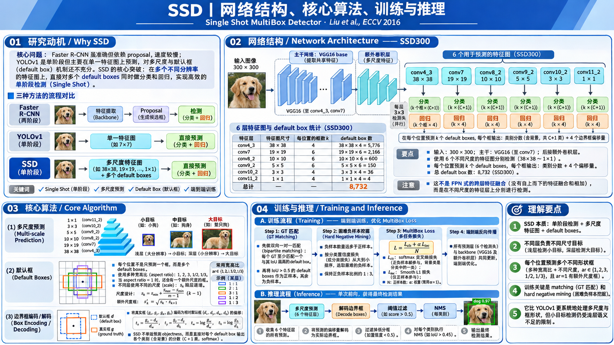

SSD 算法原理研究笔记
Single Shot MultiBox Detector · Wei Liu et al., ECCV 2016
YOLOv1 已经证明“不必先生成候选区域，也能直接检测”。SSD 接着回答：能否让单阶段检测在保留速度的同时，更好地兼顾不同大小、不同形状的目标？它的答案是：多尺度特征图 × Default Boxes × 卷积预测头。
为什么 2016 年还需要 SSD？
不是因为 YOLO 不会检测，而是「一个尺度统一预测」还有不足。
两阶段检测先给出候选框，再抽取框内特征重新分类和定位；YOLOv1 把这一过程简化为单次前向网络，但它从末端特征图整体回归 7×7 网格预测，目标尺度和密集程度会限制效果。SSD 试图保留单阶段的快速性，同时让不同分辨率的特征层直接承担不同尺度目标的预测。
先提议，再识别
候选框决定需要进一步处理哪些区域；第二阶段对每个 Proposal 分类和回归。
单一末端输出
每格共享一组类别概率，两个框负责定位；没有 Default Box，主要依赖末端统一输出。
多层并行预测
六张不同分辨率的特征图，各自在不同形状的预设框上直接输出类别和框偏移量。
网络结构：没有 Proposal 的六层检测网络
每张特征图都会产生预测，最后合并输出。沿着「尺寸 → 特征 → 参数 → 框」阅读。

1.1 六个预测层：8732 是怎么算出来的？
对第 k 张特征图，若空间尺寸为 Hₖ × Wₖ，每个位置放 Aₖ 个 Default Boxes，则该层预测 Hₖ × Wₖ × Aₖ 个框。这些是输出槽位，并不意味着图像里真有这么多物体。
数字来自 SSD300 的六个预测层与每层特定的 Default Box 数量；更换输入尺寸或结构，这个数字会变。
原版使用 ImageNet 预训练的 VGG16，将后续全连接层改造成卷积层（conv7 对应卷积化 fc7），再接附加卷积层。conv4_3 因特征幅值较大，先做 L2 Normalization 并学习缩放因子；这不是另一条检测分支。
1.2 一个 Default Box 到底输出什么？
分类分支 · Softmax
每个 Default Box 自己预测 21 个类别分数（含背景），而不是 YOLOv1 那样同一个网格的多个框共用一组类别概率。
定位分支 · 框回归
每个 Default Box 自己预测相对于它的 4 个偏移量。Default Box 的形状是先验，不是网络实时算出来的 Proposal。
核心算法：从 Default Box 到可训练的检测结果
固定框提供参考坐标；回归负责微调；匹配负责监督；分类告诉网络哪个框包含什么。
2.1 Default Box：为什么同一个位置要放多种形状？
一张特征图的位置对应输入图像上的一个中心点。只放一个正方形可能很难贴近长条、扁平或大小不同的目标，因此 SSD 给同一个中心预先安排多个尺度和宽高比。与 Faster R-CNN 的 Anchor 相似，但 SSD 会直接为这些框预测每个类别，而不是把它们送入第二阶段。
框宽高：w = sₖ √a，h = sₖ / √a；其中 a = 宽高比，sₖ = 当前层参考尺度。
此外，还有一个比例为 1、尺度为 √(sₖ · sₖ₊₁) 的额外正方形框。conv4_3 使用论文专门设置的较小尺度 0.1。
点击图片，中心会自动对齐到对应特征图的格点。注意：选哪个框用于训练由它与 GT 的重叠情况决定；推理时则所有 Default Box 都产生一次预测。
2.2 回归：Default Box 不准，CNN 如何把它改成目标框？
网络并不直接输出图片像素坐标，而是输出相对于默认框的位移与尺度比。这样不同大小的目标共享一种参数化方式。
tₓ* = (gₓ − dₓ) / d𝑤
tᵧ* = (gᵧ − dᵧ) / dₕ
t𝑤* = ln(g𝑤 / d𝑤)，tₕ* = ln(gₕ / dₕ)
g 是 GT，d 是 Default Box，* 表示回归学习的目标。
bₓ = dₓ + tₓ · d𝑤
bᵧ = dᵧ + tᵧ · dₕ
b𝑤 = d𝑤 · exp(t𝑤)
bₕ = dₕ · exp(tₕ)
b 是解码后的预测框；原论文公式未包含实现中可能使用的方差系数。
2.3 训练时谁算正样本？先配对 GT，再计算 Loss
SSD 无需像 YOLOv1 那样指定“中心落在哪个网格，哪个格负责”。它对大量默认框进行 IoU 匹配：首先为每个 GT 至少匹配最佳 Default Box；然后将与某个 GT 的 IoU 高于阈值（原文 0.5）的其他默认框也作为正样本。其余框作为负样本候选。
2.4 Hard Negative Mining：为什么不使用全部背景框？
8732 个输出槽位中，背景通常占绝大多数。如果简单把所有负样本等权加入分类损失，背景容易占据训练信号。SSD 会对未匹配框按背景分类损失从大到小排序，只取负样本数最多为正样本数的 3 倍。
先找正样本
先验框与 GT 配对，位置回归仅监督这些正样本。
再选「最容易分错」的背景
负样本按当前模型的类别损失排序；不是按 IoU 最低、也不是随机负采样。
最高 3 : 1
若有 3 个正样本，最多取 9 个困难负样本；不够时取实际存在的数量。
2.5 MultiBox Loss：一张图的训练梯度怎样产生？
N：正样本 / 匹配的默认框数量；若 N=0，论文定义 Loss=0。
L_conf：所有正样本 + 挑选出的困难负样本
对每个参与分类训练的默认框，Softmax 计算 21 类概率；真实类别对应的负对数概率构成分类损失。
正样本标签是真实类别，负样本标签是 background。
L_loc：只对匹配的正样本
预测的四个偏移量和由 GT 编码出来的四个目标偏移量相减，再经过 Smooth L1。
没有 GT 对应的负样本不计算定位回归损失。
Smooth L1 为什么不是普通平方误差？
误差较小时以二次项平滑优化；误差较大时转为线性增长，减弱异常回归偏差造成的梯度过大。
训练中最需要核对的三个数字
IoU > 0.5（额外匹配）、负 : 正 ≤ 3 : 1（Hard Negative Mining）、α=1（Loss 组合权重）。这些是 SSD 原论文的设定，不是所有 SSD 变体必须固定不变。
完整训练：从标注到权重更新
一次端到端网络优化，但仍然需要离散样本分配规则；不再有独立的 SVM 或第二阶段 RoI Head。
原版训练前的结构改造
论文基于 ImageNet 预训练的 VGG16，卷积化 fc6/fc7 并采用空洞卷积，对 conv4_3 引入 L2 归一化。额外预测层以及检测头需要初始化和联合微调。
原始实验训练参数（VOC）
基于 Caffe 实现：SGD，Momentum 0.9，Weight Decay 0.0005，Batch Size 32。数据增强不仅是通用技巧，更是 SSD 小目标表现的重要组成部分。
不同数据集与实验版本的学习率衰减计划不同；这里不把单个训练表误认成 SSD 的理论约束。
3.1 一个示例：同一 GT 为什么可以监督多个框？
不要求所有正框都恰好等于 GT；每个正框都有自己相对于 GT 的回归目标。训练充分时，多个相邻默认框可能都回归到同一个物体，推理阶段再通过 NMS 消除重复框。
完整推理：8732 个候选输出怎样变成最终检测？
没有 Selective Search、RPN、RoI Pooling；固定默认框在网络前向之后才被解码修正。
历史价值、适用边界与后续影响
重点是机制的传承，不把 SSD 捧成所有场景下最优的模型。
多尺度预测成为重要范式
不同大小的特征图都能直接承担目标检测，改进了单一输出尺度的局限。后来的 FPN 会进一步研究跨层融合，这是不同思想。
密集默认框 + 共享卷积头
在每个特征位置利用多形状先验框和轻量检测卷积完成分类与定位，使单阶段密集检测成为可行方案。
小目标与类别不平衡仍是难题
小物体在深层特征中容易丢失，8732 框背景极多、匹配规则和形状设置有超参数成本，推理仍需 NMS。
5.1 不要混淆的概念
| 研究对象 | 作用 | SSD 原版具体方式 |
|---|---|---|
| Default Box / Anchor | 为框回归提供固定参考 | 预设多尺度与长宽比；不是 RPN Proposal |
| 多尺度特征 | 覆盖不同尺寸目标 | 六张特征图分别独立预测；不是 FPN 融合 |
| 分类分支 | 每个框的类别概率 | 背景 + 20 类 Softmax；没有独立 Objectness 分支 |
| 回归分支 | 调整预设框 | 4 个相对偏移；每框一组，不按类别分 4K |
| Hard Negative Mining | 缓解前景/背景数量失衡 | 按当前分类损失挑选，负:正最多 3:1 |
| NMS | 抑制推理结果重复 | 分数过滤之后按类别执行 |
SSD 不依赖 Faster R-CNN 的二阶段结构，但其 Default Box 与 RPN Anchor 在参数化思路上有相似之处；多层预测为后续密集检测的发展提供了有价值的研究起点。
快速自查：掌握 SSD 需要回答什么？
不要求重现论文全部代码，只检验网络的数据流和训练监督是否形成闭环。
原始论文：Wei Liu, Dragomir Anguelov, Dumitru Erhan, Christian Szegedy, Scott Reed, Cheng-Yang Fu, Alexander C. Berg. SSD: Single Shot MultiBox Detector. ECCV 2016.
arXiv 原论文 · Google Research 简介 · 作者公开实现（Caffe）
注明：主例使用 SSD300/VOC 的 6 层预测、8732 个默认框和 21 个含背景类别；解码示例采用原论文的无方差系数表达，某些工程实现可能乘以额外缩放系数；网络结构细节以原论文为准。